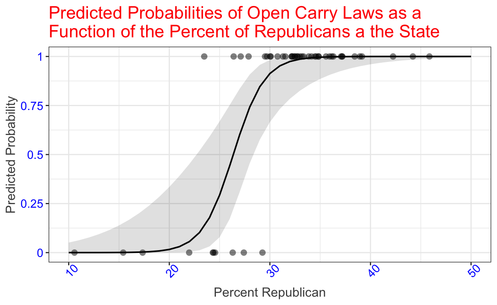

In this tutorial, you will learn how to conduct logistic regression analysis in R. Specifically we will cover:
glm() function to estimate a logistic regressionsummary() function to present the results of logistic regression analysispredict() function to generate predictions from a logistic regression modelhitmiss() function in the package psclIf we are interested in predicting a binary categorical variable – whether or not someone voted in an election, whether or not a state allows recreational marijuana use, whether or not a country experienced a terrorist attack in some time period, and the like – we should not use linear regression. Why? First, in most cases we have reason to believe the relationship between our explanatory variables and the outcome is non-linear such that a line doesn’t fit the data well. In particular, a one-unit change in \(X\) is likely to have a bigger impact for some values of \(X\) than others. Second, the error terms will not be normally distributed because the outcome variable only takes two values, 0 and 1. This means hypothesis tests are not valid. Finally, the predicted probabilities generated by fitting a linear regression to a binary outcome variable can be greater than 1 or less than 0, which makes no sense.
Logistic regression is the standard way to model a binary outcome. Like with linear regression, our explanatory variables can be measured at the categorical or interval (or ratio) level. Logistic regression models the probability that the outcome, \(Y\), is equal to one given the explanatory variables, denoted \(Pr(Y_i=1|X_{ki})\), using the logistic function:
\[Pr(Y_i=1) = \frac{exp(\alpha+ \beta X_i)}{1+ exp(\alpha + \beta X_i)}\].
where \(exp\) represents the transcendental number 2.718… taken to some power. So, \(exp(\alpha+ \beta X_i)\) is the same as \(e^{\alpha+ \beta X_i}\). \(\alpha\) is still called the intercept and \(\beta\) the slope.
The logitistic function is nonlinear. This means that we are no longer fitting a line to the data. Instead we are fitting a curve. This results in some complications for interpreting the substantive effects of our explanatory variables and necessitates a different approach to assessing model fit.
The glm() function in base R will estimate a logistic regression model. We will illustrate how to use the glm() function to estimate a model, how to use the summary() function to produce a summary of the output, how to use the predict() function to generate predictions from the model, how to use the hitmiss() function in the pscl package to assess model fit, and we will practice interpreting results using several examples. In the tutorial “Presenting Logistic Regression Results” we will cover additional tools for aiding in the interpretation of results from logistic regression.
To illustrate logistic regression we will begin with a simple logistic regression with a single independent variable.
Let’s say that we have posed the following question: How is the percent of a state’s adults who are Republican related to the probability a state allows openly carrying a firearm in public? We might make the argument that Republicans tend to be more opposed to gun control than independents or Democrats, which should, in turn, make states with more Republicans more likely to allow open carry. Thus we hypothesize:
In a comparison of states, those with more Republicans will be more likely to allow open carry than those states with fewer Republicans.
The data frame states contains data for the year 2010 for each of the 50 states. Our outcome variable is guncontrol_opencarry, which is coded a 0 if a state did not allow open carry and a 1 if it did. Our explanatory variable is republican, which is the percent of a state’s adults who claim to be Republicans.
Running a logistic regression in R is really quite simple! The function to run a regression is glm(), which stands for generalized linear model. We must specify three arguments to estimate the model. Just like with the lm() function we used to estimate linear regression, we must specify a formula, which lists the dependent variable followed by a tilde (~) and the independent variable. When we have more than one independent variable we add them with a plus sign. We must also specify the data, as we did when using linear regression. In addition, we must specify the family argument and set it equal to “binomial”. This tells R to estimate a logistic regression.
Notice we don’t need states$ before the variable names, because we are using the data argument to tell R where the data is coming from. We are going to save the results as the object model1 and then use the summary() function to present the output.
model1 <- glm(guncontrol_opencarry ~ republican, data = states, family = "binomial")
summary(model1)While linear regression estimates a linear relationship between \(Y\) and \(X\), logistic regression estimates a curvilinear relationship. This means that we cannot interpret the estimated slopes as the effect of a one-unit change in the independent variable on the probability \(Y=1\). (In fact, the slope gives the change in the log-odds that the dependent variable takes the value 1 for every unit increase in X.)
We can say whether the relationship is negative or positive. Any negatively signed slope indicates a negative relationship and any positively signed slope denotes a positive relationship. Thus, the relationship in our example is positive: the higher the percentage of Republicans in a state, the greater the probability it allows open carry.
We conduct hypothesis testing for the intercept and slope identically to the linear regression case. Let’s test whether the slope for republican is statistically significant.
Step 1. State the null hypothesis. and Step 2. State the alternative hypothesis.
Step 3. Calculate the test statistis and Step 4. Translate the test statistic to a p-value.
The test statistic and the associated p-value for our hypothesis are given in the logistic regression output. Rather than the t-value, logistic regression reports the z-value. If the absolute value of z is greater than 1.96, it is highly unlikely that the observed result differs from zero by chance and we can reject the null hypothesis with 95% confidence. If it is less than 1.96, the evidence is consistent with the null hypothesis and we fail to reject it.
The results from above are included here for your reference.
##
## Call:
## glm(formula = guncontrol_opencarry ~ republican, family = "binomial",
## data = states)
##
## Deviance Residuals:
## Min 1Q Median 3Q Max
## -2.00862 0.01190 0.09489 0.21312 2.00566
##
## Coefficients:
## Estimate Std. Error z value Pr(>|z|)
## (Intercept) -17.0391 6.1109 -2.788 0.00530 **
## republican 0.6464 0.2222 2.909 0.00362 **
## ---
## Signif. codes: 0 '***' 0.001 '**' 0.01 '*' 0.05 '.' 0.1 ' ' 1
##
## (Dispersion parameter for binomial family taken to be 1)
##
## Null deviance: 50.040 on 49 degrees of freedom
## Residual deviance: 17.694 on 48 degrees of freedom
## AIC: 21.694
##
## Number of Fisher Scoring iterations: 7Step 5. Draw a conclusion.
We rely on predicted probabilities to interpret the results from a logistic regression. The predicted probability can be calculated from the formula for the logit model:
\[Pr(\hat{Y_i}=1|X_i) = \frac{\exp(\hat{\alpha} + \hat{\beta} X_i)}{1+ \exp(\hat{\alpha} + \hat{\beta} X_i)}\] where \(PR(\hat{Y_i}=1|X_i)\) is the probability \(Y=1\), given the value of \(X_i\).
Let’s calculate the probability \(Y=1\), that a state allows open carry, given a a state has 30% Republicans, \(X_i=30\).
\[Pr(\hat{Y_i}=1|X_i=30) = \frac{\exp(-17.0391+ 0.6464*30)}{1+ \exp(-17.0391 + 0.6464*30)}\]
Below is code to have R do the algebra for us.
(exp(-17.0391 + 0.6464 * 30)) / (1 + exp(-17.0391 + 0.6464 * 30))In a state with 30% Republicans, the predicted probability the state has an open carry law is just over 91%.
To have R do this calculation directly for us, we can use the predict() function. The predict() function takes 3 arguments. The first is the name of the model fit object, here model1. We then need to pass the function the newdata argument. For this argument, we provide a data frame containing the name of the independent variable set equal to the value for which we want to calculate a prediction. The argument requires that the data be in a data frame, so we wrap this in the data.frame() function. The final argument is type, which we set equal to “response” to tell the function to return a predicted probability rather than the log-odds.
Look carefully at the code to ensure you understand what you need to do to generate a predicted value.
predict(model1, newdata = data.frame(republican = 30), type = "response")The table below presents the predicted probability for several values of \(X\).
| \(X\) | Predicted |
|---|---|
| 18 | 0.00 |
| 19 | 0.01 |
| 20 | 0.02 |
| 21 | 0.03 |
| 22 | 0.06 |
| 23 | 0.10 |
| 24 | 0.18 |
| 25 | 0.29 |
| 26 | 0.44 |
| 27 | 0.60 |
| 28 | 0.74 |
| 29 | 0.85 |
| 30 | 0.91 |
| 31 | 0.95 |
| 32 | 0.97 |
| 35 | 1.00 |
Notice that the predicted probabilities increase in a nonlinear fashion. Small increases in the percent of Republicans have little effect at lower values and higher values: For all values of percent Republican below 18, the predicted probability a state has open carry is zero and for all values 35 and over it is 1.0. But a one percentage point increase has a large effect on the predicted probability a state allows open carry with values of republican in the 20s: The predicted probability a state allows open if there are 25% Republicans is 0.29 and but with 30% Republicans it is 0.91. That’s a (very large) 0.47 difference!
Below is a plot that illustrates the predicted values from the model. We will learn to create plots like these in the tutorial “Presenting Logistic Regression Results.”

Notice that the predicted function is a curve rather than a line. That’s because we estimated a logistic regression. For lower and higher values of the percent Republican, the curve is flat, but for values of percent Republican between 20 and 30 the curve is very steep, indicating that small changes in the percent Republican have a large impact on the predicted probability a state allows open carry.
The plot includes actual values of the \(X,Y\) data pairs (a scatter plot is imposed on the plot) so we can also tell that there were some states for which our predictions were wrong. Notice that there is a state with almost 30% Republicans that did not allow open carry and there were several states with lower percentages of Republicans that did.
We assess the fit of a logit model differently than for a linear regression model. \(R^2\) and the residual standard error we used to assess the fit of linear regression models have no direct equivalent in logit. Instead it is common to report the information from what’s called a confusion matrix. We are particularly interested in two quantities: the percent correctly predicted by the model and the percent correctly predicted by the null model. The difference between these two percentages tells us how much the model improves predictions over simply guessing the most common outcome category. You should always report both quantities and the net improvement in fit as a result of the explanatory variables in your model.
A confusion matrix is a table that tells us how many times we observed y=0 (a state did not have an open carry law) and how many times we observed a y=1 (a state has an open carry law) in the data broken down by how many of those cases were and were not correctly predicted.
The package pscl contains the function hitmiss() that produces a confusion matrix and measures of fit. It takes as its only argument the name of the model object that was fit. We must load the package with the library() function before using the function. Run the code below.
library(pscl)
hitmiss(model1) What does this table tell us?
The difference between the percent correctly predicted by the model and the percent correctly predicted by the “Null Model” tells us our net improvement in predictions that is due to the explanatory variables. In our example, the net improvement is 94-80, or 14 percentage points. Not bad, but not great.
We will seldom estimate a logistic regression with a single explanatory variable. It is important to control for competing explanations in any regression model if we hope to draw valid inferences. Extending logistic regression to the case with multiple independent variables is straightforward.
For this example we will use data from the 2016 American National Election Study in the data frame aNES. We are going to specify a model of vote for Donald Trump (Trump2016, coded 1 if an individual voted for Donald Trump and 0 otherwise) as a function of how warmly they feel toward Blacks on a feeling thermometer score coded from 0 to 100 where 0 is very cool and 100 is very warm (Black.FT) and illegal immigrants (Illegals.FT), which party they identify with (partyf, coded “Democrat”, “Republican” and “Neither”), whether they are female (femalef, coded “Female” and “Male”) and their level of education (educ, where 1 denotes a respondent did not complete high school, 2 denotes they have a high school diploma, 3 denotes they attended some college, trade, or business school, 4 denotes they have a college degree, and 5 denotes post graduate work). Note that we will treat educ as an interval level variable for the purposes of this illustration.
You likely have some hypotheses about who was most likely to vote for Trump, including hypotheses related to variables not included in this example. Consider the following:
In a comparison on individuals, we expect those who feel cooler toward Blacks wil have a higher likelihood of voting for Donald Trump than those who feel warmer toward Blacks. (Because the Democratic Party tends to be more supportive of programs to benefit minorities.)
In a comparison on individuals, we expect those who feel cooler toward illegal immigrants will have a higher likelihood of voting for Donald Trump than those who feel warmer toward illegal immigrants. (Because the Democratic Party has tended to be more supportive of immigrant rights.)
In a comparison of individuals, we expect Republicans will have a higher likelihood of voting for Donald Trump than either Democrats or those who identify with neither party. (Because Donald Trump is a Republican.)
In a comparison of individuals, we expect males will have a higher likelihood of voting for Donald Trump than females. (Because the Democratic candidate was a female and Trump made disparaging remarks about women during the campaign.)
Last but not least:
In a comparison of individuals, we expect those with lower levels of education will have a higher likelihood of voting for Donald Trump than those with higher levels of education. (Because Donald Trump’s promised to bring back jobs that are disproportionately held by those with lower levels of education.)
Let’s see what we find.
Replace the XXX in the code below to estimate the logistic regression model. Both femalef and partyf are factor-class variables, so you do not need to enclose them inside the factor() function for this example.
model2 <- XXX(XXX ~ Blacks.FT + Illegals.FT + XXX + femalef + educ, XXX = "XXX", XXX = XXX)
summary(model2)To estimate a logistic regression use the glm() function.
The dependent variable, Trump2016, is the first entry in the formula.
Make sure to add partyf to the formula and specify family="binomial".
Finally, specify the data argument as aNES.model2 <- glm(Trump2016 ~ Blacks.FT + Illegals.FT + partyf + femalef + educ, family = "binomial", data = aNES)
summary(model2)Rather than walk separately through the 5 steps of hypothesis testing for each of our variables, examine the output and draw your conclusions about the direction and significance of the relationships in the model.
We can generate predictions from our model using the predict() function. Below is the code to predict the probability an individual who sits at the middle of the feeling thermometer scale for Blacks and illegal immigrants, who is a female Democrat, and has a college degree. Run the code and then change the values of the independent variables and rerun the code to examine the predicted probabilities for other types of voters. Try to find a voter profile that results in a prediction of near 50%.
predict(model2, newdata = data.frame(Blacks.FT = 50, Illegals.FT = 50, partyf = "Democrat", femalef = "Female", educ=4), type = "response")Recall that we assess model fit in a logistic regression based on the confusion matrix and that we can use the hitmiss() function in the pscl package to produce the confusion matrix and associated measures of model fit. Replace the XXX in the code below to generate this information.
XXX(XXX)Did you call the hitmiss() and pass it model2?hitmiss(model2)For our final example, we will estimate a model of turnout (turnout, coded as 0 is an individual reported not voting and 1 if they reported voting) as a function of whether an individual is a strong partisan (strong, coded as 1 is strong, 0 is not strong), income (income, an ordinal variable coded from 1-6 based on 6 income categories), level of education completed (educ), and sex (femalef). We will treat both educ and income as interval variables in this example. This simplifying assumption implies we are willing to argue that the differences between categories are the same. Ideally, we’d include age in our model, but it is not in this small version of the American National Election Study data set. We will begin with the following hypotheses:
In a comparison of individuals, those who are strong partisans will be more likely to vote than those who are non-partisan or weak partisans. (Because strong partisans are more likely to be interested in politics and more concerned about the outcome.)
In a comparison of individuals, those who have higher incomes will be more likely to vote than those who have lower incomes. (Because income bestows resources that may allow individuals to participate more easily.)
In a comparison of individuals, those who have higher levels of education will be more likely to vote than those who have lower levels of education. (Because those with higher levels of education may be more knowledgeable about politics.)
It is unclear whether males or females will be more likely to vote. Which sex has turned out at higher rates has varied over time.
Complete the code to estimate the logistic regression. Then use the summary() function to present your results.
model3 <- Use the glm() function and specify turnout as the dependent variable.
Include the tilde and then list strong, income, educ, and femalef,
separated by a plus sign.
Set family="binomial".
Specity the data argument as aNES.model3 <- glm(turnout~strong + income + educ + femalef, family = "binomial", data = aNES)
summary(model3)Generate code to predict the probability that an individual who is not a strong partisan (strong = 0), has a high income (income = 5), who has a college degree (educ = 4), and is a female (femalef = “Female”) turns out to vote.
You need to use the predict() function.
Pass the function the name of the model fit object, model3.
Specify the newdata argument by setting it equal to data.frame()
Inside data.frame list each independent variable and set it to the
requested value. Separate each by a comma.
Finally, add a comma and specify type="response".predict(model3, newdata = data.frame(strong = 1, income = 5, educ = 4, femalef = "Female"), type = "response")Finally, write code to produce a confusion matrix and measures of model fit.
Call the hitmiss() function and pass it the name of the model fit object.hitmiss(model3)Assess the fit of the model.
This is not a particularly good model. We might like to control for other demographic variables, but if we want better predictions of individual turnout we would also like to know something about individual levels of interest in politics.
Logistic regression estimates a nonlinear relationship between a set of predictors and a binary (two-category) outcome variable.
Logistic regression is easy to conduct in R using the glm() function. The results of the analysis can then be examined with the summary() function. The results provide the information needed to interpret the direction and statistical significance of the effect of the independent variables (but not the size of the effect), to test hypotheses about the intercept and slopes, and to calculate the predicted values. In order to assess model fit we need to examine the confusion matrix and the percent of cases of the outcome variable that are correctly predicted.
predict() function R to do this for us.In the next tutorial, “Presenting Logistic Regression Results” we will illustrate how to use plots to generate predicted values for interesting combinations of the explanatory variables.